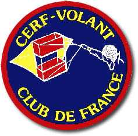
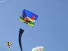
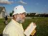
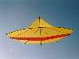
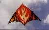
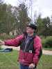
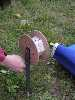
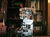
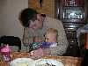
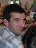

| Accueil | Premiers Cerfs-volants | Cerfs-volants récents | Techniques et Plans | Fêtes et Reportages | Amis Cervolistes | Mots Croisés | Liens | P |

Je fais partie du Cerf-Volant Club de France, "club de cerf-volistes constructeurs, avec des rencontres, du vol, de l'amitié, des histoires à raconter, une revue indispensable pour échanger, partager, progresser" (dixit Didier Ferment). Je vole avec ceux de l'Antenne de Beauce bien que j'habite dans le Val d'Oise, mais c'est avec eux que j'ai commencé, alors les racines... Ceci dit, nous volons (et plus si affinités...) à Epernon tous les premiers dimanche du mois. En fait seuls 6 mordus viennent régulièrement, moi et les 5 présentés ! Mais n'hésitez pas à vous joindre à nous si vous n'habitez pas trop loin...Pascal PAVELPascal, le Président, très occupé mais qui n'hésite jamais à mettre notre Flow-Form en l'air. Il a aussi bien des réalisations personnelles à son actif... |
|
 Sylvien VENETSylvien, grand créateur depuis 20 ans (!), connait tout sur le CV, de l'aérodynamique à la couture. Il ne se contente pas de réaliser, il expérimente et modifie jusqu'à avoir trouvé l'optimum. "Jessica 14", dernier-né de Sylvien, vole comme une fleur dans les thermiques.  "Passion", encore de Sylvien est plus ancien et est intéressant à toute distance, avec ses motifs à différentes échelles, ses coutures avec des fils ornementés, voire sans fil, ses superpositions, etc. |
 François PERIAULTFrançois appelé parfois "Tige Filetée", vous fera entendre le carillon de Notre-Dame si vous le lui demandez. C'est un bricoleur de génie et un gros constructeur. Bobine de François, sur piquet mais démontable pour le voyage.  Tête pour photo panoramique (6 photos espacées de 60 degrés). |
|
 Daniel CRINIERDaniel, un peu freiné maintenant, crée encore pas mal (de CVs, je veux dire...). |
|
 Christophe JACQUEMOUDChristophe, photographe informaticien n'hésite pas à attaquer les appareils photos les plus modernes et délicats à la perceuse et au fer à souder, ni à transformer un bouton de sonnette en télécommande, et.. ça marche ! |